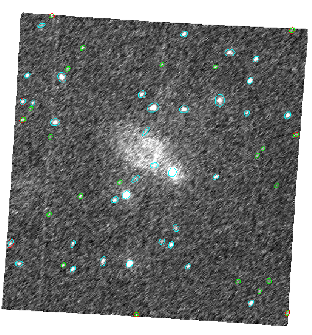
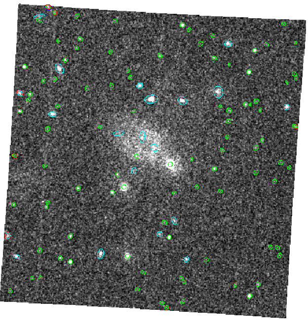

Before stacking images it is desirable to make sure that they are properly aligned first- by this it is meant that the absolute coordinate values (RA/DEC for sky-images) at the reference pixels are accurate. Any such errors will degrade the mosaiced image and possibly lead to source-detection and source-parameterization problems. To illustrate this, In Figures 4 and 5 we compare two mosaiced images from the stacking of the same two sky-image files, testimage1.fits and testimage2.fits. The latter file is a copy of testimage1.fits, but the reference pixels CRPIX1 and CRPIX2 have both had two pixels added. The image in Figure 4 has been created simply by stacking them, without alignment, using the command - ommosaic imagesets=''testimage1.fits testimage2.fits" mosaicedset=mosaicedimage1.fits mincorr=0''. and the image in Figure 5 created using the command ommosaic imagesets=''testimage1.fits testimage2.fits" mosaicedset=mosaicedimage2.fits mincorr=0.5 correlset=correl.fits''.
|  |
|  |
For the latter mosaiced image, ommosaic correctly computed the reference pixel offsets (2 pixels) and corrected them internally before stacking the two images.
A comparison of the two figures shows that
Figure 6 shows the correlation image produced by ommosaic and stored in the file correl.fits. The image is 21x21 pixels and each pixel is ten times smaller than a pixel in testimage1.fits. As can be seen from the image, there is a well defined maximum correlation near the centre of the image, and this is a good indication that the image-alignment algorithim worked well.